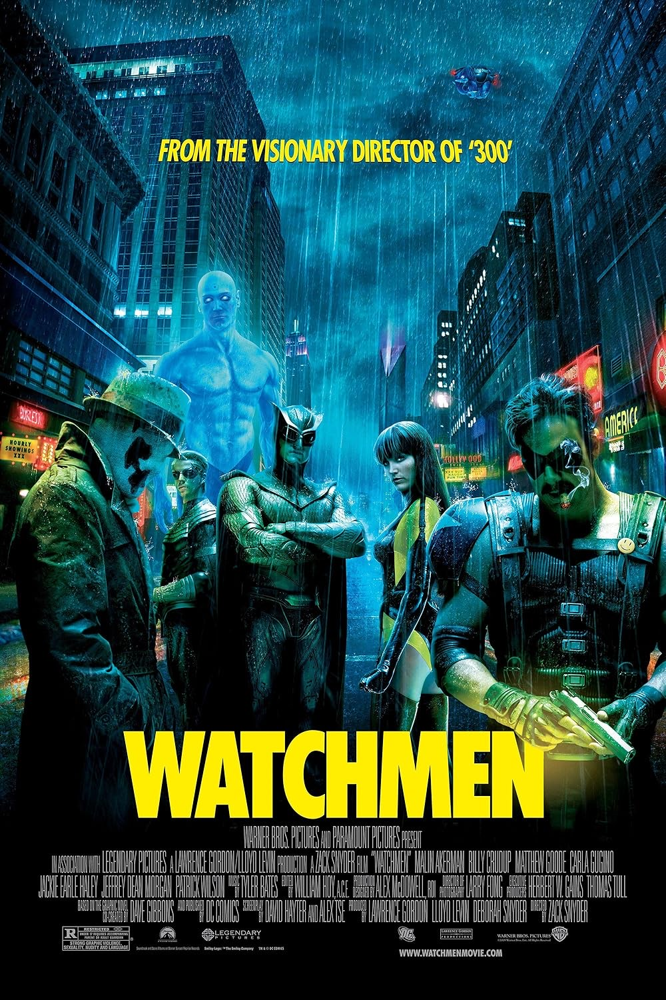

Watchmen
Octubre 2019
Ciencia Ficción

4.0
Estados Unidos, años 80, la Guerra Fría está en su apogeo, y los superhéroes, que antes habían sido admirados, ahora son perseguidos por la ley. Un día aparece muerto uno de ellos, El Comediante, que trabajaba para la CIA. Su amigo Rorschach, el único héroe enmascarado en activo, emprenderá la investigación de su muerte, tras la que se oculta algo muy importante. Esperadísima adaptación del cómic de Alan Moore y Dave Gibbons (1986)